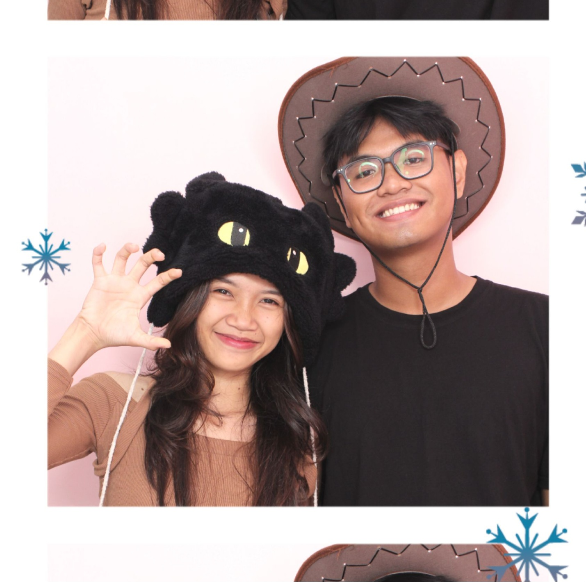

HI KIDS,
Sorry yah cuman bisa ngasi beginian hehe, aku bingung soalnya mau ngasih apaa.
Happy National Girlfriend Day Sayangg🩷.
Paskalia Celine
Keknya kalau romance romance gituk aku tak tau la nak ngetik ape, jadi aku nak ngetik ape yang ade jak wkwkwkwk. Jujur aku sampe sekarang ndak tau ngape kau bisa suka sama aku, kek kau suka aku tu dari segi manenye jirr. Aku masih bertanya-tanya dan belum dapat jawaban yang buat aku puas same jawaban e. Bingung je, padahal aku ndak jago basket, ndak sepintar itu, ndak sekeren itu la pokoknye.
Kalau kau tanyak ngape aku bise suke same kau si, banyak ye cuman aku rangkum je la. Pertame, aku suka kau tu karna kau tu jujur banget orangnye, kalau jelek ye jelek, kalau bagus ye bagus. Aku pernah nanyak kau sesuatu yang keknye banyak cewek kalo aku tanyak gituk jawabannye same same je, tapi kau bede. Same kau jugak orangnye ndak yang menye-menye(walau kadang ade juga si wkwkw) tapi aku suke je kalo yang to the point gituk. Kau pun juga cantik bangettttt, ini top 3 foto favorit aku dari kau(walau dah banyak kuapus gegare kemaren wkwk).
Lucuk lucuk semuaaa. Tapi kau jarang pap dah :(
Honorable Mention
Sorry
Sorry ye kalo selame ini aku masi terlalu over dalam segala hal, kek terlalu cemburu, terlalu rusuh sampe kaunye risih. Aku juga lagi nyobe kok buat jadi yang terbaik mwah. Soalnya aku ndak tau ngape kek cemburuan banget, tapi keknye kau ndak suke ye aku gituk, soalnya kau nampak ndak hiraukan gituk setiap kali aku cemburu. Jadi sekarang aku mencoba untuk tak cemburuuu(masih day 1 pls sabar yah)
Thank You
Thank you yah udah baca pesan yang ndak seberapa ini hehe, cuman mau ngasi ini je si wkwkwkw. Sorry ndak bise ngasi yang keren keren bangett kek orang orang atau mungkin ur ex. Aku cuman kepikiran buat ini karna kaunya juga masi jauhh
Ni ade yang keren ni dibawah, cobe pencet tu.